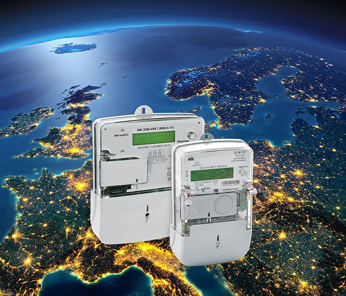

<!doctype html>
<html lang="uk">
<head>
<meta charset="utf-8">
<meta name="viewport" content="width=device-width, initial-scale=1">
<title>Підключення лічильників через трансформатори струму — НІК-ЕЛЕКТРОНІКА</title>
<meta name="description" content="Як влаштовані трансформатори струму NIK, де вони застосовуються і яким стандартам відповідають.">
<meta name="robots" content="noindex">
<link rel="preconnect" href="https://fonts.googleapis.com">
<link rel="preconnect" href="https://fonts.gstatic.com" crossorigin="">
<link href="https://fonts.googleapis.com/css2?family=JetBrains+Mono:wght@400;500;600&amp;display=swap" rel="stylesheet">
<link rel="stylesheet" href="style.css">

<script src="https://cdn.jsdelivr.net/npm/morphdom@2.7.4/dist/morphdom-umd.min.js"></script>
<script src="runtime.js"></script>
<script src="shell.js"></script>
</head>
<body>
<div id="app"></div>
<script type="text/x-template" id="tpl">
<shell-top></shell-top>
<main id="main">
<section class="phead">
  <div class="wrap">
    <div class="narrow">
      <nav aria-label="Навігаційний ланцюжок"><ol class="crumbs"><li><a href="index.html">Головна</a></li><li><a href="news.html">Прес-центр</a></li><li><a href="news.html">Новини</a></li><li><span aria-current="page">Трансформатори струму</span></li></ol></nav>
      <div class="meta"><span class="tag">Продукція</span><span><time datetime="2020-12-11">11.12.2020</time> · 6&nbsp;хв читання</span></div>
      <h1>Підключення лічильників через трансформатори струму</h1>
      <p class="lead">З 2017 року НІК-ЕЛЕКТРОНІКА випускає трансформатори струму нової конструкції: як вони влаштовані, де застосовуються і яким стандартам відповідають.</p>
      <div class="share" role="group" aria-label="Поділитися"><span class="share-t">Поділитися</span><a href="#" class="icon" aria-label="Поділитися в LinkedIn" title="LinkedIn"><svg width="20" height="20" viewBox="0 0 24 24" fill="currentColor" aria-hidden="true"><path d="M4.98 3.5a2.5 2.5 0 1 1 0 5 2.5 2.5 0 0 1 0-5zM3 9h4v12H3zM9 9h3.8v1.7h.1c.5-1 1.8-2 3.8-2 4 0 4.8 2.6 4.8 6V21h-4v-5.4c0-1.3 0-3-1.8-3s-2.1 1.4-2.1 2.9V21H9z"></path></svg></a><a href="#" class="icon" aria-label="Поділитися у Facebook" title="Facebook"><svg width="20" height="20" viewBox="0 0 24 24" fill="currentColor" aria-hidden="true"><path d="M14 8.5V6.8c0-.8.5-1 1-1h2V2.2L14.2 2C11.2 2 9.7 3.8 9.7 6.4v2.1H7v3.8h2.7V22H14v-9.7h2.8l.4-3.8z"></path></svg></a><a href="#" class="icon" aria-label="Скопіювати посилання" title="Скопіювати посилання"><svg width="20" height="20" viewBox="0 0 24 24" fill="none" stroke="currentColor" stroke-width="1.8" stroke-linecap="round" stroke-linejoin="round" aria-hidden="true"><path d="M10 14a4 4 0 0 0 5.7 0l3-3a4 4 0 0 0-5.7-5.7l-1 1M14 10a4 4 0 0 0-5.7 0l-3 3a4 4 0 0 0 5.7 5.7l1-1"></path></svg></a></div>
    </div>
  </div>
</section>

<div class="wrap pbody">
  <div class="acover"></div>
  <!-- For developers: show the contents (nav.lg-toc + class lg-has-toc) only when the news has 3 or more subheadings (h2).
       With fewer, leave both out: the text stays 55rem from the left edge and the right side stays empty.
       TEMPORARY for the client call (28.11): the bar «Тимчасово: порівняння» at the bottom switches A (text across the full width, no contents;
       shown first) and B (text + contents). The cross hides the bar until the page is reloaded; the chosen variant stays. Remove the bar, .cmp in style.css and agridCls once a variant is chosen. -->
  <div class="{{agridCls}}">
    <nav class="lg-toc" aria-label="Зміст"><p class="lg-toc-t">Зміст</p><ol><li><a href="#s1" class="{{tc.s1}}">Що таке трансформатор струму</a></li><li><a href="#s2" class="{{tc.s2}}">Як він влаштований</a></li><li><a href="#s3" class="{{tc.s3}}">Де застосовується</a></li><li><a href="#s4" class="{{tc.s4}}">Відповідність стандартам</a></li><li><a href="#s5" class="{{tc.s5}}">Технічні характеристики</a></li><li><a href="#s6" class="{{tc.s6}}">Як позначати при замовленні</a></li></ol></nav>
    <article class="art">
      <p>Три роки тому — в 2017 році — лінійка основної продукції ТОВ «НІК-ЕЛЕКТРОНІКА» — лічильники енергоресурсів (електроенергії, води, тепла, газу) — поповнилася ще одним виробом широкого застосування: трансформаторами струму нової конструкції.</p>
      <h2 id="s1">Що таке трансформатор струму</h2>
      <p>Трансформатор струму — це вимірювальний трансформатор, у якому вторинний струм при нормальних умовах застосування є пропорційним первинному струму. Первинні обмотки трансформаторів струму включаються у розрив лінійних провідників.</p>
      <p>Вимірювальні трансформатори, до яких відносять трансформатори струму, призначені для зменшення первинних струмів до рівнів, зручних для приєднання до вимірювальних приладів. Вони також забезпечують розділення кіл високої та низької напруги, що робить їх відносно безпечними для обслуговуючого персоналу.</p>
      <p>Трансформатори струму нашого виробництва застосовуються у розподільних пристроях низької напруги й призначені для передачі аналогових сигналів вимірювальним пристроям, лічильникам та мають одну вторинну обмотку. Трансформатори застосовуються в системах обліку, у тому числі комерційного, електричної енергії.</p>
      <p>Хоча принцип дії трансформаторів струму не залежить від напруги мереж, де вони застосовуються, але напруга мережі суттєво впливає на вимоги щодо ізоляції обмоток, а відтак й на їх конструкцію.</p>
      <h2 id="s2">Як він влаштований</h2>
      <p>В нашому виконанні трансформатор струму представляє собою одношарову обмотку на тороїдному магнітопроводі, виготовленому з нанокристалічних сплавів. Нанокристалічні сплави — новий клас магнітом’яких матеріалів, які вигідно відрізняються своєю технологічністю і відносною дешевизною сировини від інших. Завдяки структурній особливості сплаву досягається висока магнітна проникність, а також забезпечуються низькі втрати на вихрові струми і прекрасні характеристики магнітної проникності.</p>
      <p>Обмотка на тороїдному магнітопроводі є вторинною обмоткою, а первинною обмоткою є шина, пропущена крізь отвір тороїда. Шина поворотна (ТОПН-0,66) або неповоротна (ТОПНШ-0,66). Якщо через первинну обмотку пропустити змінний струм, то він створить змінний магнітний потік у магнітопроводі, який наведе електрорушійну силу у вторинній обмотці.</p>
      <h2 id="s3">Де застосовується</h2>
      <p>Трансформатори струму, виробництво яких здійснюється на заводі в м.&nbsp;Дніпро, призначені для передачі сигналу вимірювальної інформації вимірювальним приладам та пристроям в установках змінного струму частотою 50&nbsp;Гц з номінальною напругою до 0,66&nbsp;кВ включно на об’єктах електроенергетики, сільського господарства, в комунальному секторі та організаціях інших галузей народного господарства.</p>
      <h2 id="s4">Відповідність стандартам</h2>
      <p>Трансформатор ТОPN (ТОПН)-0,66 відповідає вимогам наступних стандартів:</p>
      <ul class="feat"><li>ДСТУ IEC 60044-1:2008 «Трансформатори вимірювальні. Частина 1. Трансформатори струму (IEC 60044-1:2003, IDT)»</li><li>ГОСТ 15150-69 — в частині кліматичних факторів для експлуатації в районах, що відносяться до кліматичного виконання У категорії розміщення 3</li><li>ГОСТ 17516.1-90 — в частині стійкості до дії механічних факторів зовнішнього середовища, згідно з групою механічного виконання М39 ступеню жорсткості 8</li></ul>
      <p>За ДСТУ IEC 60044-1:2008:</p>
      <table class="dtable"><tbody><tr><td>Ізоляція первинної обмотки витримує випробувальну напругу частотою 50&nbsp;Гц протягом 60&nbsp;с</td><td>3&nbsp;кВ</td></tr><tr><td>Нормована витримана напруга частотою 50&nbsp;Гц для ізоляції вторинної обмотки (середньоквадратичне значення)</td><td>3&nbsp;кВ</td></tr><tr><td>Номінальна витримана напруга для міжвиткової ізоляції (амплітудне значення)</td><td>4,5&nbsp;кВ</td></tr><tr><td>Опір ізоляції первинної обмотки за нормальних кліматичних умов, не менше</td><td>40&nbsp;МОм</td></tr><tr><td>Опір ізоляції вторинної обмотки за нормальних кліматичних умов, не менше</td><td>20&nbsp;МОм</td></tr></tbody></table>
      <p>Захист проти втручання в конструкцію трансформаторів здійснюється за допомогою пломбування корпусу трансформатора, внаслідок чого унеможливлюється доступ до елементів трансформатора без пошкодження пломб.</p>
      <h2 id="s5">Технічні характеристики</h2>
      <table class="dtable"><tbody><tr><td>Номінальна напруга</td><td>0,66&nbsp;кВ</td></tr><tr><td>Найвища робоча напруга</td><td>0,72&nbsp;кВ</td></tr><tr><td>Номінальна сила первинного струму</td><td>150; 200; 300; 400; 500; 600; 800; 1000; 1200; 1500; 2000&nbsp;А</td></tr><tr><td>Номінальна частота</td><td>50&nbsp;Гц</td></tr><tr><td>Номінальна сила вторинного струму</td><td>5&nbsp;А</td></tr><tr><td>Клас точності вторинної обмотки за ДСТУ IEC 60044-1</td><td>0,5S</td></tr><tr><td>Номінальна потужність вторинної обмотки (cos&nbsp;φ&nbsp;=&nbsp;0,8)</td><td>5&nbsp;В·А</td></tr><tr><td>Номінальний коефіцієнт безпеки приладів вторинної обмотки</td><td>3</td></tr><tr><td>Робочий діапазон температури</td><td>від −45&nbsp;°C до +40&nbsp;°C</td></tr><tr><td>Первинна обмотка</td><td>поворотна шина (ТОПН-0,66) або неповоротна (ТОПНШ-0,66)</td></tr><tr><td>Габарити, 150–400&nbsp;А</td><td>не більше 125&nbsp;×&nbsp;98&nbsp;×&nbsp;75&nbsp;мм</td></tr><tr><td>Габарити, 500–600&nbsp;А</td><td>не більше 170&nbsp;×&nbsp;98&nbsp;×&nbsp;75&nbsp;мм</td></tr><tr><td>Габарити, 800–2000&nbsp;А</td><td>не більше 180&nbsp;×&nbsp;66&nbsp;×&nbsp;170&nbsp;мм</td></tr><tr><td>Маса</td><td>не більше 0,7&nbsp;кг (150–400&nbsp;А), 1,0&nbsp;кг (500–600&nbsp;А), 1,5&nbsp;кг (800–2000&nbsp;А)</td></tr><tr><td>Середнє напрацювання на відмову</td><td>не менше 3×10<sup>5</sup> годин</td></tr><tr><td>Середній строк служби</td><td>не менше 25 років</td></tr></tbody></table>
      <h2 id="s6">Як позначати при замовленні</h2>
      <p>Приклад запису умовного позначення трансформатора на номінальну напругу 0,66&nbsp;кВ при його замовленні: <strong>трансформатор струму ТОPN (ТОПН)-0,66-0,5S-600/5 У3</strong></p>
      <table class="dtable"><tbody><tr><td>Т</td><td>трансформатор</td></tr><tr><td>О</td><td>опорний в пластмасовому корпусі</td></tr><tr><td>Р (П)</td><td>із поворотною шиною</td></tr><tr><td>N (Н)</td><td>торговельна марка NiK</td></tr><tr><td>0,66</td><td>номінальна напруга 0,66&nbsp;кВ</td></tr><tr><td>0,5S</td><td>клас точності 0,5S</td></tr><tr><td>600/5</td><td>номінальний первинний струм 600&nbsp;А, вторинний 5&nbsp;А</td></tr><tr><td>У3</td><td>кліматичне виконання У, категорія розміщення 3</td></tr></tbody></table>
    </article>
  </div>
</div>
<div class="{{cmpCls}}" role="group" aria-label="Тимчасово: порівняння варіантів"><span class="cmp-t">Тимчасово: порівняння</span><button type="button" aria-pressed="{{vA}}" onClick="{{pickA}}">A · На всю ширину</button><button type="button" aria-pressed="{{vB}}" onClick="{{pickB}}">B · Зміст справа</button><button type="button" class="cmp-x" aria-label="Сховати перемикач" title="Сховати (з’явиться знову після оновлення сторінки)" onClick="{{hideCmp}}"><svg width="16" height="16" viewBox="0 0 24 24" fill="none" stroke="currentColor" stroke-width="2.2" stroke-linecap="round" aria-hidden="true"><path d="M6 6l12 12M18 6L6 18"></path></svg></button></div>

<section class="sec on-paper" aria-labelledby="h-news">
  <div class="wrap">
    <div class="shead">
      <div><span class="kick">Прес-центр</span><h2 class="h2" id="h-news">Інші новини</h2></div>
      <a href="news.html" class="btn btn-line"><svg width="18" height="18" viewBox="0 0 24 24" fill="none" stroke="currentColor" stroke-width="2.2" stroke-linecap="round" stroke-linejoin="round" aria-hidden="true"><path d="M19 12H5M11 6l-6 6 6 6"></path></svg>Усі новини</a>
    </div>
    <div class="ngrid three">
      <sc-for list="{{list}}" as="n" hint-placeholder-count="3">
        <a href="article.html" class="nc">
          <span class="pi"></span>
          <span class="bd"><span class="meta"><span class="{{n.tagCls}}">{{n.c}}</span><time datetime="{{n.iso}}">{{n.d}}</time></span><span class="t">{{n.t}}</span><span class="more">Читати далі<svg width="16" height="16" viewBox="0 0 24 24" fill="none" stroke="currentColor" stroke-width="2.2" stroke-linecap="round" stroke-linejoin="round" aria-hidden="true"><path d="M5 12h14M13 6l6 6-6 6"></path></svg></span></span>
        </a>
      </sc-for>
    </div>
    <a href="news.html" class="btn btn-line news-more"><svg width="18" height="18" viewBox="0 0 24 24" fill="none" stroke="currentColor" stroke-width="2.2" stroke-linecap="round" stroke-linejoin="round" aria-hidden="true"><path d="M19 12H5M11 6l-6 6 6 6"></path></svg>Усі новини</a>
  </div>
</section>
</main>
<shell-bottom></shell-bottom>
</script>
<script>
window.DC_BLOBS = {"64d3854c808afc98f555fddf056f74b8":"../../assets/64d3854c-h-2024.webp","ea5a942ba9f38ea4590615924d2a72ed":"../../assets/ea5a942b-news-7021.jpg","cf8e2f1dd66b397312a466e40c80f839":"../../assets/cf8e2f1d-news-kc02.webp"};
class Component extends DCLogic {
  constructor(props) {
    super(props);
    this.state = { cookie: true, menu: false, sec: 's1', v: 'A', cmp: true };
    this.spyTimer = setTimeout(() => this.initSpy(), 300);
  }
  // contents: the section whose heading has passed a third of the screen is the current one (as on privacy.html)
  initSpy() {
    let queued = false;
    const spy = () => {
      queued = false;
      let cur = 's1';
      document.querySelectorAll('.art h2[id]').forEach((h) => { if (h.getBoundingClientRect().top < window.innerHeight * 0.3) cur = h.id; });
      if (cur !== this.state.sec) this.setState({ sec: cur });
    };
    window.addEventListener('scroll', () => { if (!queued) { queued = true; requestAnimationFrame(spy); } }, { passive: true });
    spy();
  }
  renderVals() {
    const s = this.state;
    const B = '/_blob/';
    const list = [
      { d: '05.11.2024', c: 'Партнерство', t: 'НІК-ЕЛЕКТРОНІКА подовжила членство в ICC', img: '64d3854c808afc98f555fddf056f74b8' },
      { d: '10.12.2021', c: 'Сертифікація', t: 'Лічильник 7021 сертифіковано', img: 'ea5a942ba9f38ea4590615924d2a72ed' },
      { d: '08.12.2020', c: 'Сертифікація', t: 'Сертифікат експертизи типу для KC-\u206002', img: 'cf8e2f1dd66b397312a466e40c80f839' }
    ].map((n) => ({ ...n, iso: n.d.split('.').reverse().join('-'), img: B + n.img, tagCls: 'tag' }));
    const tc = { s1: '', s2: '', s3: '', s4: '', s5: '', s6: '' };
    tc[s.sec] = 'on';
    // temporary A/B for the client call, see the comment above the article
    const agridCls = s.v === 'A' ? 'agrid full' : 'agrid wide left lg-has-toc';
    const ab = { agridCls, vA: String(s.v === 'A'), vB: String(s.v === 'B'), pickA: () => this.setState({ v: 'A' }), pickB: () => this.setState({ v: 'B' }), cmpCls: s.cmp ? 'cmp' : 'cmp off', hideCmp: () => this.setState({ cmp: false }) };
    return Object.assign(this.base(s), { list, tc }, ab);
  }
}

DC.mount(Component);
</script>
</body>
</html>
